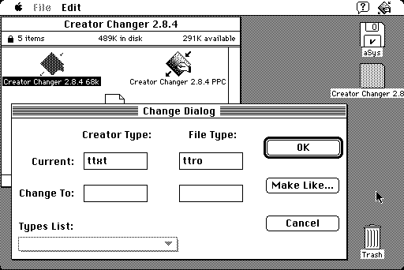

Download
creator-changer-284.zip (139K) Creator Changer 2.8.4 repackaged into a zipped hfs disk image and checksum file. The disk image can be mounted with Mini vMac.
creator-changer-284.hqx (197K) Creator Changer 2.8.4 in the original format.
copyright: Christopher Lee Waskowich
mod date: Aug 14, 1997
license: mailware
Will "allow you to change what documents belong to what applications, as well as what the document type is." (i.e. file creator and type) "You must have System 7.0 or later and at least 160k advised of free RAM to run Creator Changer 2.8.4."
Source code is included.

If you find these downloads useful, please consider helping the Gryphel Project, which hosts them.
Here are the md5 checksums for the downloads, signed with Gryphel Key 5:
--------- GRY SIGNED TEXT --------- ff4cb55a30f5113a30a176c553da94be creator-changer-284.zip 6407bd9249d70951a33c0abed9779dd6 creator-changer-284.hqx ------- BEGIN GRY SIGNATURE ------- Gry/4Xa8CFcUzxdN/P7mcpCDEEHmfVvTsRlGZmsew/NMNtsuJErGIXzWEQJ9igty SJlLogbmngQ6DMPcGuJjjQHNuI8Xb6DLJ3kWvzcq44k15/BPu8gXFRFX68TYdyRA gyTXhgc1xF+EFKtlXR7CSRexSLgMl14b5NBsRI52SzL9teLjHo4/mrM1OwciL+Aw -------- END GRY SIGNATURE --------